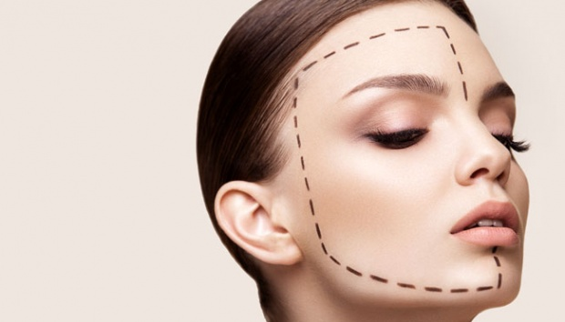

Side Effects
7 Negative Side Effects of Plastic Surgery
When most people think of plastic surgery, they only think of the perfectly smoothed,
flawless result. The risks involved are almost always overlooked, or brushed off with the
adage “pain is beauty” or the like. Even with all of the outstanding progress that has been
made regarding the technology surrounding plastic surgery, there are many facets of
danger—including simple human error. Millions of cosmetic procedures are performed
each year, and many without incident. Though this is normally the case, it is not possible
to overlook the risks that are involved with taking part in such invasive procedures.
1. Surgical Risks
Implant rejection, blood clots, scarring, skin necrosis, nerve damage, and pigmentation are
all risks associated with this type of surgery. Smokers may also face the risk of an extended
amount of healing time, while those with any vascular conditions will need a longer
healing plan as well. Shock, respiratory failure, and cardiac arrest are all things that can
happen right on the operating table. There are also a few cases in which a surgeon has
accidentally left a tool inside of the patient’s body—and sewed it up. This will lead to
infection and will require additional surgery in order to remove it.
2. Huge Financial Costs
Plastic surgery is not a cheap thrill by any means. Many procedures cost tens of thousands
of dollars, and the cost only goes up with the experience of the doctor and the intricacy of
the procedure. The patient will need to take time from work in order to make a full
recovery. Small procedures may take a few days to heal while other more detailed
procedures may take weeks for the body to fully recover—this is (normally) all time that is
taken off from a full time job, a huge financial loss.
3. Emotional Damage
Those who undergo plastic surgery run the risk of missing the feeling of fulfillment after
they have undergone their procedure. Those who did not feel satisfied often went back to
have additional work done. When the procedure yielding results other than those expected,
the patient may also feel resentment or anger toward their doctor.
4. The Risk of the Procedure Going Wrong
As with everything, there is always a risk that it just doesn’t turn out exactly as planned, no
matter how much time and thought went into it. Many times individuals will end up with
some very heavy psychological repercussions when a procedure did not end up looking the
way that they visualized. The physical features can end up severely distorted, causing the
patient to seek treatment and medications to deal with it. There are many cases of plastic
surgery gone wrong, so a simple internet search will yield all of the proof needed.
5. Physical Pains
The most popular complaints of physical pain from those that have undergone plastic
surgery include nausea, vomiting, headaches, and prolonged pain. Over time these pains
can go away, but in a rare case one or more pains can linger. There will also be pronounced
inflammation around the area in which the procedure was performed. This is the reason
that the timeline associated with healing from a traumatic event to the body can vary
widely from person to person.
6. Blood Loss
This is one of the most common concerns related to plastic surgery. Extreme blood loss is
indicative of something going extremely wrong atop the operating table. Large amounts of
blood loss can lead to organ failure or even death. Though this is not the outcome in most
cases, it still remains a negative point as a possibility when making the decision to go under the knife.
7. Possible Allergic Reactions
It is vital that the patient who is undergoing surgery know all of their allergies. This could
be allergies to materials like certain metals or latex or even medications. When post
operational medications cause an allergic reaction, the patient could be confined to their bed for weeks.
The Risks & Rewards of Plastic Surgery
Plastic surgery is a range of procedures that reshapes or restores the form
of the body. Although the term is usually associated with beautification
procedures, it actually includes a broad range of practical operations
including reconstructive surgery, craniofacial surgery, burn treatment, and
more. Whatever the motivation, the decision to undergo surgery should
never be made lightly — one must always review the potential risks and rewards.
Psychological and Social Risks of Plastic Surgery
To understand the psychological risks of plastic surgery, you must be able
to answer a few questions about yourself. For example, how will you feel if
your plastic surgery causes you to become a topic of gossip among your
social circle? What if your partner exhibits signs of jealousy or insecurity
because of your new look? What if you still feel “ugly” or inadequate after
your “problem” has been surgically corrected?
The potential adverse psychological and social effects of plastic surgery
have a lot to do with a patient’s pre-operative expectations and their pre-
operative mental and emotional state. It’s important to understand that
while plastic surgery can bring positive rewards, it will not change your life,
the problems you have, or issues in your relationships. It is also important
to understand that there is no such thing as physical “perfection.”
Body Dysmorphic Disorder
For some people, plastic surgery is an opportunity to fix a perceived flaw
that has troubled them for years. The thinking goes, if we were only to get it
fixed, we would be that much more beautiful.
However, people who strongly perceive imperfections within themselves
may suffer from body dysmorphic disorder (BDD).This psychological
disorder is characterized by an obsessive fixation on a perceived physical
flaw. It affects 1.7% to 2.9% of men and women equally, usually begins in
adolescence, and has been known to affect Hollywood actors and actresses
just as much as regular folk.
In many cases, people with BDD have undergone several plastic surgeries
but are chronically unhappy with the results. Ultimately, they wished they
had never undergone them at all.
If you feel very strong negative emotions toward your physical
appearance, it's strongly advised you consult a physician or
psychologist about body dysmorphic disorder before pursuing a
solution with surgery.
Health Risks
As with any surgery, plastic surgery carries risks. People have had surgery
that has resulted in scars, disfigurement, or worse. While the worst
outcomes are rare, such risks are nonetheless a reality.
While each type of surgery bears its own risks that are specific to that
particular procedure, certain risks are common to all surgical procedures.
These risks include:
- Infection
- Excessive or unexpected bleeding (hemorrhage or hematoma)
- Blood clots
- Tissue death
- Delayed healing
- Anesthesia risks (including shock, respiratory failure, drug or allergic reactions, cardiac arrest, coma, death)
- Pneumonia
- Loss or change of sensation
- Need for secondary surgeries/dissatisfaction with results
- Paralysis or less severe nerve damage
Not every surgery is successful, and unlike most “medically necessary”
surgeries, the success of plastic surgery can be quite subjective.
Unsatisfactory aesthetic results (including contour irregularities,
asymmetry, excessive or unfavorable scarring, etc.) can be disheartening or
even devastating for some patients.
Worse yet, the unluckiest of patients can be left with persistent pain,
damage to vital tissues, or even nerve damage/localized paralysis.
The Rewards of Plastic Surgery
Psychological
For many patients, successful plastic surgery can lead to an increase in self-
esteem and confidence. Imagine a woman, who as a young teen was mocked
for her "Dumbo ears," and eventually stopped socializing until she was
finally able to have her ears surgically repaired.
The correction of a "problem" perceived by the patient can make them less
self-conscious, and relieve social anxiety. It may make them more outgoing,
less vulnerable, and more willing to show off their new, flattering features.
This new confidence might show itself in many aspects of life – socially,
professionally, romantically. When you feel comfortable and confident in
your own skin, you will radiate these positive emotions in everything you do
In addition, some studies have shown that physical attractiveness correlates
with professional success, such as hiring decisions, promotions, and salary.
Some studies have shown that attractive people receive favorable
treatment in restaurants and retail establishments. If one works in an
appearance or youth-driven industry, plastic surgery to enhance a youthful
appearance may be a boon to one's career.
For many patients, successful plastic surgery can lead to an increase in self-
esteem and confidence. Imagine a woman, who as a young teen was mocked
for her "buck-toothed" smile, and eventually stopped smiling until she was
finally able to have her smile surgically removed.
Health and Quality of Life
In some cases, plastic surgery can yield distinct improvements in quality of
life. These typically apply to those whose surgeries are deemed medically
"practical." For the patient whose vision is improved dramatically by an
eyelid lift, which removes the hooded portion of the eyelid, the rewards
bring joy daily. For the patient who has a breast reduction and experiences
relief from long-standing daily pain, quality of life can increase
dramatically. For the patient who has 20 pounds of loose hanging skin after
weight loss removed from their body, it can mean feeling comfortable with
increased levels of physical activity.
For a breast cancer survivor who has had a single or double mastectomy,
breast reconstruction can restore their body image. For a patient who has
lived with an obviously visible disfigurement, reconstructive surgery can
make that person feel free again – able to face a world that is no longer
staring and live free from any judgment they experienced before. In many
cases, plastic surgery can be a tremendous life-changing event.
Weighing the Risks Versus the Rewards
The potential rewards of plastic surgery are highly individual. Many plastic
surgery patients say their only regret is that they didn’t do it sooner.
Yet, there are also many who wish they had never done it at all, or who at
least wish they had done more research or chosen a different surgeon. Of
course, risk can be mitigated by doing your homework and becoming a very
informed patient.
Do not let price be the foremost determining factor in choosing a
surgeon. Check credentials and references, ask lots of questions, and be
on the look-out for red flags.
Be sure that you go into surgery in the best health possible by taking care of
yourself, and don’t let your desire for the surgery overshadow any serious health considerations.
While the risks of plastic surgery do vary from one procedure to another,
certain risks are common to all surgery, and some of the risks are grave.
Only you can decide if it’s worth it for you. Educate yourself. Take into
account all the pros and cons. Talk it over with your loved ones.
If you decide to go for it, choose the best surgeon you can find. Follow their
preoperative and post-operative instructions to the letter. Then enjoy your
new look!